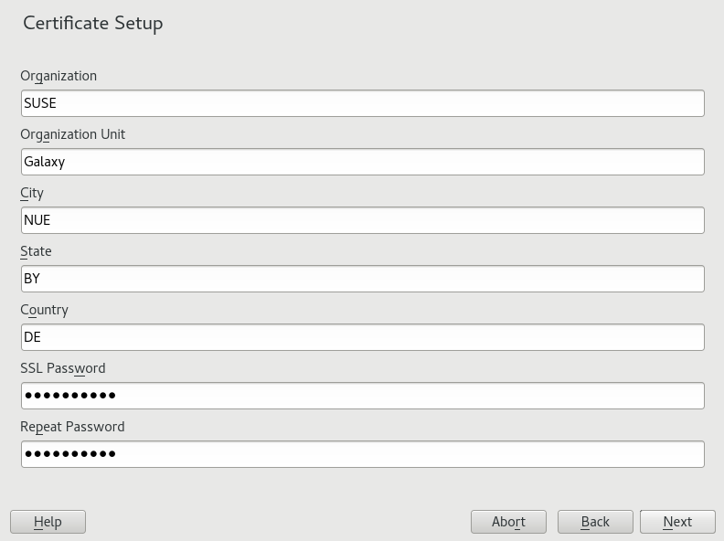
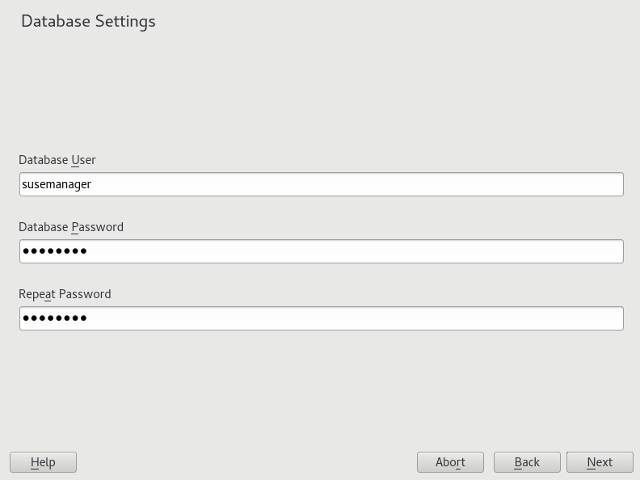
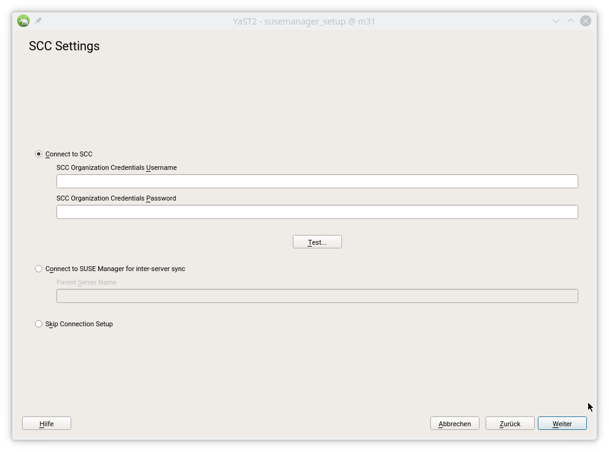
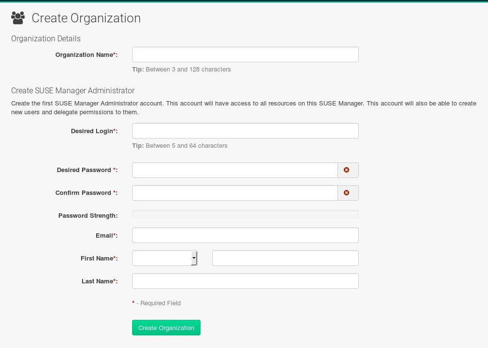

SUSE Manager Setup
Topics
This section covers Uyuni setup. You will perform the following procedures:
-
Start Uyuni setup via YaST or command line
-
Create the main administration account with the Uyuni Web UI
-
Name your base organization and add login credentials
-
Sync the SUSE Linux Enterprise product channel from SUSE Customer Center
Uyuni Setup
|
Third Party Software
Uyuni is an extension of SUSE Linux Enterprise Server and compatible with the software shipped with SUSE Linux Enterprise Server. Uyuni is a complex system, and therefore installing third party is not allowed. Installing monitoring software provided by a third party vendor is allowed only if you do not exchange basic libraries such as SSL, cryptographic software, and similar tools. In case of emergency, SUSE reserves the right to ask to remove any third party software (and associated configuration changes) and then to reproduce the problem on a clean system. |
This section will guide you through Uyuni setup procedures.
-
Login to the Uyuni server desktop and perform one of the following actions to begin setup:
-
Select .
-
Open a terminal as root and type
yast2 susemanager_setupto begin setup.
-
-
From the introduction screen select and click Next to continue.
-
Enter an email address to receive status notifications and click Next to continue. Note that Uyuni can sometimes send a large volume of notification emails. You can disable email notifications in the Web UI after setup, if you need to.
-
Enter your certificate information and a password. Passwords must be at at least seven characters in length, and must not contain spaces, single or double quotation marks (
'or"), exclamation marks (!), or dollar signs ($). Always store your passwords in a secure location.Certificate PasswordWithout this password it will not be possible to set up a Uyuni Proxy Server.
-
Click Next to continue.
 -
From the screen, enter a database user and password and click Next to continue. Passwords must be at at least seven characters in length, and must not contain spaces, single or double quotation marks (
'or"), exclamation marks (!), or dollar signs ($). Always store your passwords in a secure location. -
Enter your SUSE Customer Center
Organization Credentials. Open https://scc.suse.com/login to register or access to your organization credentials.SkipIf you are using SUSE Enterprise products, Uyuni requires that you connect to SUSE Customer Center for software, updates and patches. You will not be able to synchronize or provide Enterprise channels to your clients without this information.
However if you would like to work with open source software channels and repositories then click the Skip button to continue. You can setup your SUSE Customer Center credentials or configure inter-server sync at a later time.
 -
Click Next to continue.
-
Click Yes to run setup when prompted.
-
Once setup has completed, click Next to continue. You will see the address of the Uyuni Web UI.
-
Click Finish to complete Uyuni setup.
In the next section you will create the administrator’s account and synchronize with SUSE Customer Center.
Creating the Main Administration Account
This section will walk you through creating your organizations main administration account for Uyuni.
|
Admin and User Accounts
The main administration account is the highest authority account within Uyuni and therefore account access information should be stored in a secure location. For security it is recommended that the main administrator creates low level admin accounts designated for administration of organizations and individual groups. |
-
In the browser, enter the address provided after completing setup and open the Uyuni Web UI.
-
Add your organization name to the field.
-
Add your username and password to the and fields.
-
Fill in the Account Information fields including an email for system notifications.
-
Select Create Organization to finish creating your administration account.

You should now be presented with the Uyuni Front Page. In the next section you will prepare the server for connecting the first client.
Syncing Products from SUSE Customer Center
SUSE Customer Center (SCC) maintains a collection of repositories which contain packages, software and updates for all supported enterprise client systems. These repositories are organized into channels each of which provide software specific to a distribution, release and architecture. After synchronizing with SCC clients may receive updates, and be organized into groups and assigned to specific product software channels.
This section covers synchronizing with SCC from the Web UI and adding your first client channel.
-
From the Uyuni Web UI start page select .
-
From the page select the SUSE Products tab. Wait a moment for the products list to populate. If you previously registered with SUSE Customer Center a list of products will populate the table. This table lists architecture, channels, and status information. For more information, see:
xref:FILENAME.adoc#vle.webui.admin.wizard.products[]
+
+
-
Since Your SUSE Linux Enterprise client is based on
x86_64architecture scroll down the page and select the check box for this channel now.-
Add channels to Uyuni by selecting the check box to the left of each channel. Click the arrow symbol to the left of the description to unfold a product and list available modules.
-
Start product synchronization by clicking the Add Products button.
-
After adding the channel Uyuni will schedule the channel to be copied.
This can take a long time as Uyuni will copy channel software sources from the SUSE repositories located at SUSE Customer Center to local /var/spacewalk/ directory of your server.
|
PostgreSQL and Transparant Huge Pages
In some environments, Transparent Huge Pages provided by the kernel may slow down PostgreSQL workloads significantly. To disable Transparant Huge Pages set the GRUB_CMDLINE_LINUX_DEFAULT="resume=/dev/sda1 splash=silent quiet showopts elevator=noop transparent_hugepage=never" To write the new configuration run |
Monitor channel synchronization process in real-time by viewing channel log files located in the directory /var/log/rhn/reposync:
tailf /var/log/rhn/reposync/<CHANNEL_NAME>.log
After the channel sync process has completed proceed to:
pass:c[xref:FILENAME.adoc#preparing.and.registering.clients[]]